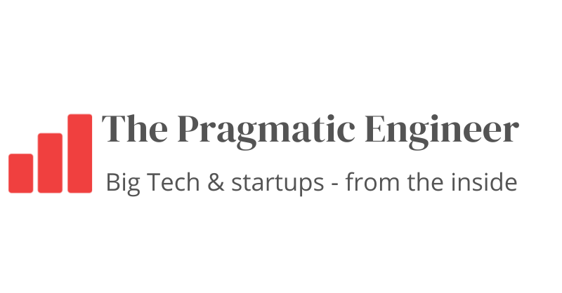
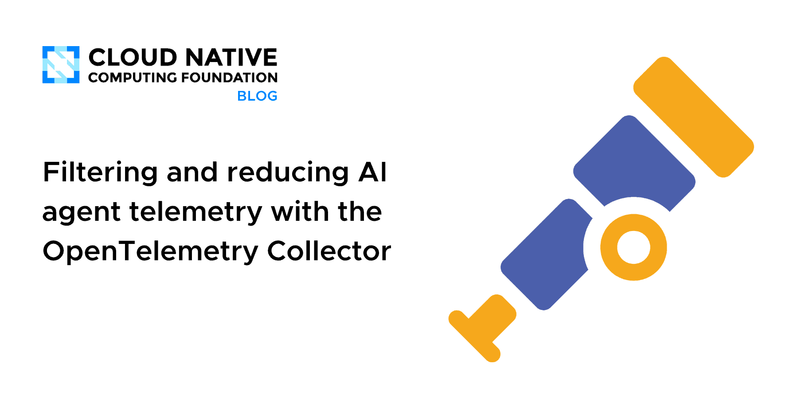
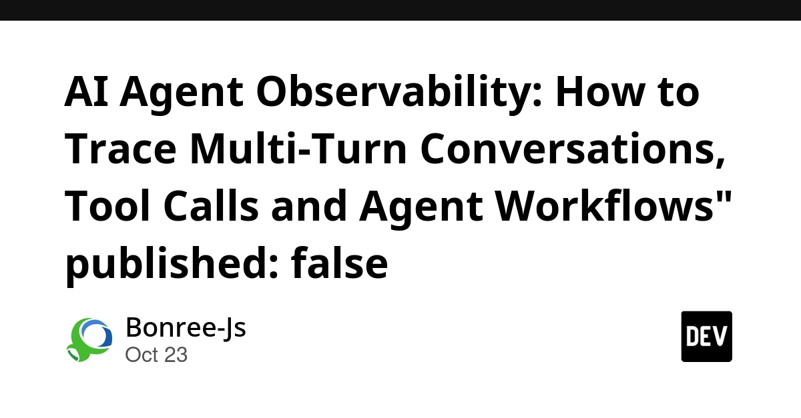
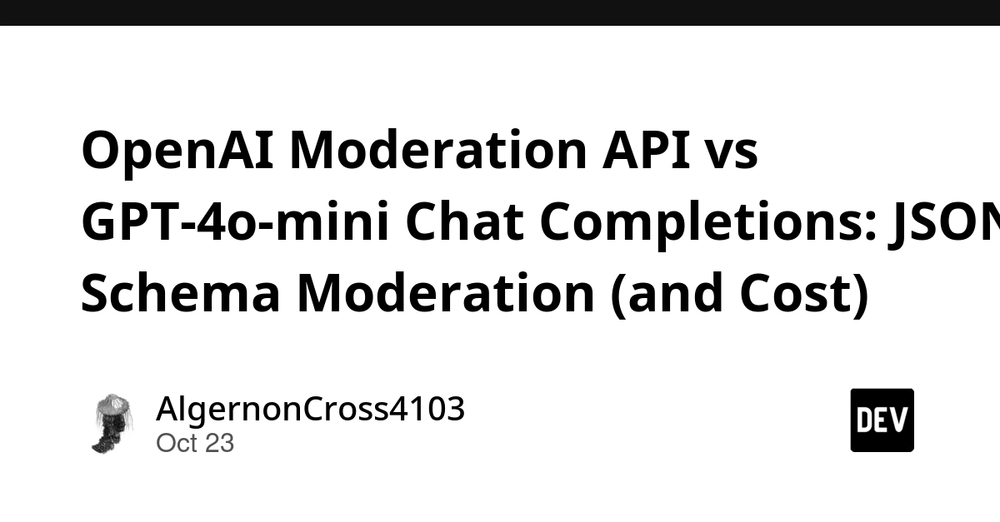
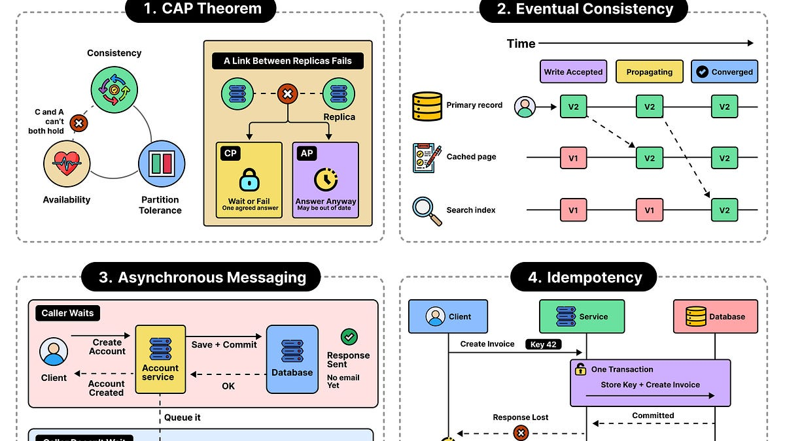
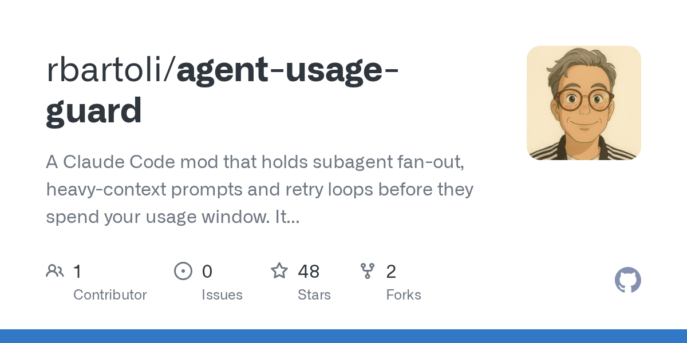

🔥 Top 3 (must read)
The Pulse: Anthropic builds its own source control system
Anthropic merges about 30,000 PRs per day, and Git had too many performance problems at that size. So they built their own system, called "Scion". The author talked with the team, including about why they did not open source it. Why it matters: This shows what can happen to your delivery pipeline when coding agents make PR volume go up many times.

Donating Agent Skills to the Agentic AI Foundation
Anthropic is giving the Agent Skills standard to the Agentic AI Foundation (AAIF), which is part of the Linux Foundation. MCP took the same path before. The goal is to keep Skills open, run by the community, and not tied to one vendor. Why it matters: If your team writes skills in
.claude/skills/ today, they are now more likely to work in other agents too.
LLMs are making formal software verification feasible at a much larger scale
This is Anthropic research on using LLMs for formal verification. Formal verification means using math to prove that code is correct, instead of only testing it. The claim is that LLMs now make this practical for much larger code bases than before. Why it matters: It could change test strategy. For some critical code, proofs could sit next to E2E and unit tests.

🤖 AI for developers
Filtering and reducing AI agent telemetry with the OpenTelemetry Collector
(CNCF): Coding agents send out a huge amount of OTel data. This post shows how to filter it in the Collector so it costs less to store and is easier to read.

AI Agent Observability: tracing multi-turn conversations, tool calls and workflows
: A guide to what you should record for an agent, such as model calls, tool calls, tokens, latency and errors. It argues that the session is the right unit for analysis.

Shipping claude-shiploop
: A Claude Code workflow is now open source. It is a one-page
CLAUDE.md protocol, five skills, and a scorecard. The loop is: spec → build → measure → promote what repeats.OpenAI Moderation API vs GPT-4o-mini with JSON Schema
: An edtech case study about content moderation. Use a dedicated moderation API when one fits. If not, use a cheap model with a strict schema, and add validation and retry.

👔 Engineering & teams
Why Distributed Systems Prefer Independence over Coordination
(ByteByteGo): Explains why coordination between nodes is costly, and why designs that let nodes work alone scale better.

🎯 For me
Claude Code team practice: claude-shiploop is a ready example of
CLAUDE.md + skills + a way to measure if people follow the process. This is useful if you want a shared AI workflow in your team.AI + DevOps: The CNCF OTel Collector post fits well if you plan to track agent usage and cost across your team.
EM / delivery: Scion is a real case study of tooling that broke when AI raised PR volume.
💡 App ideas & indie builds
UI micro-interactions prompts for AI
(HN, 74 pts): A library of prompts for UI micro-interactions, like hover states and small animations. Problem: AI-generated UIs often feel flat and generic. Inspiration: A small, focused product: a curated "prompt pack" for one design niche.
T
agent-usage-guard
(HN, 22 pts): A Claude Code mod that protects your usage window. Problem: Developers use up their agent quota in the middle of a work session. Inspiration: Small guard tools around AI tools are a growing area. They are easy to build and solve a pain people feel every day.

🎓 Try this
Try claude-shiploop on one side project. Copy its
CLAUDE.md protocol and the five skills. After one week, run the scorecard to see how often you really followed spec → build → measure. Then decide if it is worth using in your team.